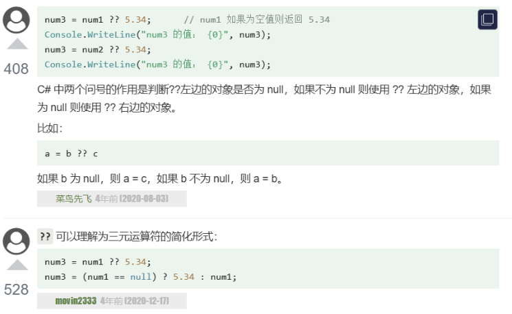

c#语法
一个 C# 程序主要包括以下部分：
- 命名空间声明（Namespace declaration）
- 一个 class
- Class 方法
- Class 属性
- 一个 Main 方法
- 语句（Statements）& 表达式（Expressions）
- 注释
注意：
-
C# 文件的后缀为 .cs。
-
C# 是大小写敏感的。
- 所有的语句和表达式必须以分号（;）结尾。
- 程序的执行从 Main 方法开始。
- 与 Java 不同的是，文件名可以不同于类的名称。
以下创建一个 test.cs 文件，文件包含了可以打印出 "Hello World" 的简单代码：
让我们看一下上面程序的各个部分：
-
程序的第一行 using System; - using 关键字用于在程序中包含 System 命名空间。 一个程序一般有多个 using 语句。
-
下一行是 namespace 声明。一个 namespace 里包含了一系列的类。HelloWorldApplication 命名空间包含了类 HelloWorld。
-
下一行是 class 声明。类 HelloWorld 包含了程序使用的数据和方法声明。类一般包含多个方法。方法定义了类的行为。在这里，HelloWorld 类只有一个 Main 方法。
-
下一行定义了 Main 方法，是所有 C# 程序的 入口点。Main 方法说明当执行时 类将做什么动作。
-
下一行 /.../ 将会被编译器忽略，且它会在程序中添加额外的 注释。
-
Main 方法通过语句
Console.WriteLine("Hello World");
指定了它的行为。
WriteLine 是一个定义在 System 命名空间中的 Console 类的一个方法。该语句会在屏幕上显示消息 "Hello World"。
- 最后一行 Console.ReadKey(); 是针对 VS.NET 用户的。这使得程序会等待一个按键的动作，防止程序从 Visual Studio .NET 启动时屏幕会快速运行并关闭。
基本语法
using 关键字
在任何 C# 程序中的第一条语句都是：（一个程序可以包含多个 using 语句。
class 关键字
class 关键字用于声明一个类。
注释
多行注释以 /* 开始，并以字符 */** 终止。
单行注释是用 // 符号表示。
标识符
-
标识符必须以字母、下划线或 @ 开头，后面可以跟一系列的字母、数字（ 0 - 9 ）、下划线（ _ ）、@。
-
标识符中的第一个字符不能是数字。
-
标识符必须不包含任何嵌入的空格或符号，比如 ? - +! # % ^ & * ( ) [ ] { } . ; : " ' / \。
-
标识符不能是 C# 关键字。除非它们有一个 @ 前缀。 例如，@if 是有效的标识符，但 if 不是，因为 if 是关键字。
-
标识符必须区分大小写。大写字母和小写字母被认为是不同的字母。
-
不能与C#的类库名称相同。
C# 关键字
下表列出了 C# 中的保留关键字（Reserved Keywords）和上下文关键字（Contextual Keywords）：
| 保留关键字 | ||||||
|---|---|---|---|---|---|---|
| abstract | as | base | bool | break | byte | case |
| catch | char | checked | class | const | continue | decimal |
| default | delegate | do | double | else | enum | event |
| explicit | extern | false | finally | fixed | float | for |
| foreach | goto | if | implicit | in | in (generic modifier) | int |
| interface | internal | is | lock | long | namespace | new |
| null | object | operator | out | out (generic modifier) | override | params |
| private | protected | public | readonly | ref | return | sbyte |
| sealed | short | sizeof | stackalloc | static | string | struct |
| switch | this | throw | true | try | typeof | uint |
| ulong | unchecked | unsafe | ushort | using | virtual | void |
| volatile | while | |||||
| 上下文关键字 | ||||||
| add | alias | ascending | descending | dynamic | from | get |
| global | group | into | join | let | orderby | partial (type) |
| partial (method) | remove | select | set |
顶级语句（Top-Level Statements）
省略无用步骤;
传统 C# 代码 - 在使用顶级语句之前，你必须像这样编写一个 C# 程序：
使用顶级语句的 C# 代码 - 使用顶级语句，可以简化为：
注意事项
- 文件限制：顶级语句只能在一个源文件中使用。如果在一个项目中有多个使用顶级语句的文件，会导致编译错误。
- 程序入口：如果使用顶级语句，则该文件会隐式地包含 Main 方法，并且该文件将成为程序的入口点。
- 作用域限制：顶级语句中的代码共享一个全局作用域，这意味着可以在顶级语句中定义的变量和方法可以在整个文件中访问。
顶级语句在简化代码结构、降低学习难度和加快开发速度方面具有显著优势，特别适合于编写简单程序和脚本。
数据类型
值类型（Value types）
值类型变量可以直接分配给一个值。它们是从类 System.ValueType 中派生的。
值类型直接包含数据。比如 int、char、float，它们分别存储数字、字符、浮点数。当您声明一个 int 类型时，系统分配内存来存储值。
| 类型 | 描述 | 范围 | 默认值 |
|---|---|---|---|
| bool | 布尔值 | True 或 False | False |
| byte | 8 位无符号整数 | 0 到 255 | 0 |
| char | 16 位 Unicode 字符 | U +0000 到 U +ffff | '\0' |
| decimal | 128 位精确的十进制值，28-29 有效位数 | (-7.9 x 1028 到 7.9 x 1028) / 100 到 28 | 0.0M |
| double | 64 位双精度浮点型 | (±)5.0 x 10-324 到 (±)1.7 x 10308 | 0.0D |
| float | 32 位单精度浮点型 | -3.4 x 1038 到 + 3.4 x 1038 | 0.0F |
| int | 32 位有符号整数类型 | -2,147,483,648 到 2,147,483,647 | 0 |
| long | 64 位有符号整数类型 | -9,223,372,036,854,775,808 到 9,223,372,036,854,775,807 | 0L |
| sbyte | 8 位有符号整数类型 | -128 到 127 | 0 |
| short | 16 位有符号整数类型 | -32,768 到 32,767 | 0 |
| uint | 32 位无符号整数类型 | 0 到 4,294,967,295 | 0 |
| ulong | 64 位无符号整数类型 | 0 到 18,446,744,073,709,551,615 | 0 |
| ushort | 16 位无符号整数类型 | 0 到 65,535 | 0 |
引用类型（Reference types）
内置的 引用类型有：object、dynamic 和 string。
- 对象（Object）类型
对象（Object）类型 是 C# 通用类型系统（Common Type System - CTS）中所有数据类型的终极基类。Object 是 System.Object 类的别名。所以对象（Object）类型可以被分配任何其他类型（值类型、引用类型、预定义类型或用户自定义类型）的值。但是，在分配值之前，需要先进行类型转换。
当一个值类型转换为对象类型时，则被称为 装箱；另一方面，当一个对象类型转换为值类型时，则被称为 拆箱。
- 动态（Dynamic）类型
您可以存储任何类型的值在动态数据类型变量中。这些变量的类型检查是在运行时发生的。
声明动态类型的语法：
例如：
动态类型与对象类型相似，但是对象类型变量的类型检查是在编译时发生的，而动态类型变量的类型检查是在运行时发生的。
- 字符串（String）类型
字符串（String）类型 允许您给变量分配任何字符串值。字符串（String）类型是 System.String 类的别名。它是从对象（Object）类型派生的。字符串（String）类型的值可以通过两种形式进行分配：引号和 @引号。
例如：
一个 @引号字符串：
C# string 字符串的前面可以加 @（称作"逐字字符串"）将转义字符（\）当作普通字符对待，比如：
等价于：
指针类型（Pointer types）
指针类型变量存储另一种类型的内存地址。C# 中的指针与 C 或 C++ 中的指针有相同的功能。
声明指针类型的语法：
例如：
类型转换
隐式类型转换
显式类型转换
例：
类型转换方法
使用 Convert 类
这些方法都定义在 System.Convert 类中，使用时需要包含 System 命名空间。它们提供了一种安全的方式来执行类型转换，因为它们可以处理 null值，并且会抛出异常，如果转换不可能进行。
例如，使用 Convert.ToInt32 方法将字符串转换为整数：
使用 Parse 方法
Parse 方法用于将字符串转换为对应的数值类型，如果转换失败会抛出异常。
使用 TryParse 方法
| 方法类别 | 方法 | 描述 |
|---|---|---|
| 隐式转换 | 自动进行的转换 | 无需显式指定，通常用于安全的类型转换，如从较小类型到较大类型 |
| 显式转换（强制转换） | (type)value |
需要显式指定，通常用于可能导致数据丢失或转换失败的情况 |
Convert 类方法 |
Convert.ToBoolean(value) |
将指定类型转换为 Boolean |
Convert.ToByte(value) |
将指定类型转换为 Byte |
|
Convert.ToChar(value) |
将指定类型转换为 Char |
|
Convert.ToDateTime(value) |
将指定类型转换为 DateTime |
|
Convert.ToDecimal(value) |
将指定类型转换为 Decimal |
|
Convert.ToDouble(value) |
将指定类型转换为 Double |
|
Convert.ToInt16(value) |
将指定类型转换为 Int16（短整型） |
|
Convert.ToInt32(value) |
将指定类型转换为 Int32（整型） |
|
Convert.ToInt64(value) |
将指定类型转换为 Int64（长整型） |
|
Convert.ToSByte(value) |
将指定类型转换为 SByte |
|
Convert.ToSingle(value) |
将指定类型转换为 Single（单精度浮点型） |
|
Convert.ToString(value) |
将指定类型转换为 String |
|
Convert.ToUInt16(value) |
将指定类型转换为 UInt16（无符号短整型） |
|
Convert.ToUInt32(value) |
将指定类型转换为 UInt32（无符号整型） |
|
Convert.ToUInt64(value) |
将指定类型转换为 UInt64（无符号长整型） |
|
Parse 方法 |
Boolean.Parse(string) |
将字符串解析为 Boolean |
Byte.Parse(string) |
将字符串解析为 Byte |
|
Char.Parse(string) |
将字符串解析为 Char |
|
DateTime.Parse(string) |
将字符串解析为 DateTime |
|
Decimal.Parse(string) |
将字符串解析为 Decimal |
|
Double.Parse(string) |
将字符串解析为 Double |
|
Int16.Parse(string) |
将字符串解析为 Int16 |
|
Int32.Parse(string) |
将字符串解析为 Int32 |
|
Int64.Parse(string) |
将字符串解析为 Int64 |
|
SByte.Parse(string) |
将字符串解析为 SByte |
|
Single.Parse(string) |
将字符串解析为 Single |
|
UInt16.Parse(string) |
将字符串解析为 UInt16 |
|
UInt32.Parse(string) |
将字符串解析为 UInt32 |
|
UInt64.Parse(string) |
将字符串解析为 UInt64 |
|
TryParse 方法 |
Boolean.TryParse(string, out bool) |
尝试将字符串解析为 Boolean，返回布尔值表示是否成功 |
Byte.TryParse(string, out byte) |
尝试将字符串解析为 Byte，返回布尔值表示是否成功 |
|
Char.TryParse(string, out char) |
尝试将字符串解析为 Char，返回布尔值表示是否成功 |
|
DateTime.TryParse(string, out DateTime) |
尝试将字符串解析为 DateTime，返回布尔值表示是否成功 |
|
Decimal.TryParse(string, out decimal) |
尝试将字符串解析为 Decimal，返回布尔值表示是否成功 |
|
Double.TryParse(string, out double) |
尝试将字符串解析为 Double，返回布尔值表示是否成功 |
|
Int16.TryParse(string, out short) |
尝试将字符串解析为 Int16，返回布尔值表示是否成功 |
|
Int32.TryParse(string, out int) |
尝试将字符串解析为 Int32，返回布尔值表示是否成功 |
|
Int64.TryParse(string, out long) |
尝试将字符串解析为 Int64，返回布尔值表示是否成功 |
|
SByte.TryParse(string, out sbyte) |
尝试将字符串解析为 SByte，返回布尔值表示是否成功 |
|
Single.TryParse(string, out float) |
尝试将字符串解析为 Single，返回布尔值表示是否成功 |
|
UInt16.TryParse(string, out ushort) |
尝试将字符串解析为 UInt16，返回布尔值表示是否成功 |
|
UInt32.TryParse(string, out uint) |
尝试将字符串解析为 UInt32，返回布尔值表示是否成功 |
|
UInt64.TryParse(string, out ulong) |
尝试将字符串解析为 UInt64，返回布尔值表示是否成功 |
常量
字符常量
在这里，列出一些转义序列码：
| 转义序列 | 含义 |
|---|---|
| \ | 字符 |
| \' | ' 字符 |
| \" | " 字符 |
| \? | ? 字符 |
| \a | Alert 或 bell |
| \b | 退格键（Backspace） |
| \f | 换页符（Form feed） |
| \n | 换行符（Newline） |
| \r | 回车 |
| \t | 水平制表符 tab |
| \v | 垂直制表符 tab |
| \ooo | 一到三位的八进制数 |
| \xhh . . . | 一个或多个数字的十六进制数 |
运算符（同cpp
算术运算符
下表显示了 C# 支持的所有算术运算符。假设变量 A 的值为 10，变量 B 的值为 20，则：
| 运算符 | 描述 | 实例 |
|---|---|---|
| + | 把两个操作数相加 | A + B 将得到 30 |
| - | 从第一个操作数中减去第二个操作数 | A - B 将得到 -10 |
| * | 把两个操作数相乘 | A * B 将得到 200 |
| / | 分子除以分母 | B / A 将得到 2 |
| % | 取模运算符，整除后的余数 | B % A 将得到 0 |
| ++ | 自增运算符，整数值增加 1 | A++ 将得到 11 |
| -- | 自减运算符，整数值减少 1 | A-- 将得到 9 |
- c = a++: 先将 a 赋值给 c，再对 a 进行自增运算。
- c = ++a: 先将 a 进行自增运算，再将 a 赋值给 c 。
- c = a--: 先将 a 赋值给 c，再对 a 进行自减运算。
- c = --a: 先将 a 进行自减运算，再将 a 赋值给 c 。
赋值运算符
下表列出了 C# 支持的赋值运算符：
| 运算符 | 描述 | 实例 |
|---|---|---|
| = | 简单的赋值运算符，把右边操作数的值赋给左边操作数 | C = A + B 将把 A + B 的值赋给 C |
| += | 加且赋值运算符，把右边操作数加上左边操作数的结果赋值给左边操作数 | C += A 相当于 C = C + A |
| -= | 减且赋值运算符，把左边操作数减去右边操作数的结果赋值给左边操作数 | C -= A 相当于 C = C - A |
| *= | 乘且赋值运算符，把右边操作数乘以左边操作数的结果赋值给左边操作数 | C *= A 相当于 C = C * A |
| /= | 除且赋值运算符，把左边操作数除以右边操作数的结果赋值给左边操作数 | C /= A 相当于 C = C / A |
| %= | 求模且赋值运算符，求两个操作数的模赋值给左边操作数 | C %= A 相当于 C = C % A |
| <<= | 左移且赋值运算符 | C <<= 2 等同于 C = C << 2 |
| >>= | 右移且赋值运算符 | C >>= 2 等同于 C = C >> 2 |
| &= | 按位与且赋值运算符 | C &= 2 等同于 C = C & 2 |
| ^= | 按位异或且赋值运算符 | C ^= 2 等同于 C = C ^ 2 |
| |= | 按位或且赋值运算符 | C |= 2 等同于 C = C | 2 |
其他运算符
下表列出了 C# 支持的其他一些重要的运算符，包括 sizeof、typeof 和 ? :
| 运算符 | 描述 | 实例 |
|---|---|---|
| sizeof() | 返回数据类型的大小。 | sizeof(int)，将返回 4. |
| typeof() | 返回 class 的类型。 | typeof(StreamReader); |
| & | 返回变量的地址。 | &a; 将得到变量的实际地址。 |
| * | 变量的指针。 | *a; 将指向一个变量。 |
| ? : | 条件表达式 | 如果条件为真 ? 则为 X : 否则为 Y |
| is | 判断对象是否为某一类型。 | If( Ford is Car) // 检查 Ford 是否是 Car 类的一个对象。 |
| as | 强制转换，即使转换失败也不会抛出异常。 | Object obj = new StringReader("Hello"); StringReader r = obj as StringReader; |
循环
| 循环类型 | 描述 |
|---|---|
| while 循环 | 当给定条件为真时，重复语句或语句组。它会在执行循环主体之前测试条件。 |
| for/foreach 循环 | 多次执行一个语句序列，简化管理循环变量的代码。 |
| do...while 循环 | 除了它是在循环主体结尾测试条件外，其他与 while 语句类似。 |
| 嵌套循环 | 您可以在 while、for 或 do..while 循环内使用一个或多个循环。 |
| 控制语句 | 描述 |
|---|---|
| break 语句 | 终止 loop 或 switch 语句，程序流将继续执行紧接着 loop 或 switch 的下一条语句。 |
| continue 语句 | 跳过本轮循环，开始下一轮循环。 |
当条件表达式不存在时，它被假设为真。您也可以设置一个初始值和增量表达式，但是一般情况下，程序员偏向于使用 for(;;) 结构来表示一个无限循环。
封装
封装 被定义为"把一个或多个项目封闭在一个物理的或者逻辑的包中"。在面向对象程序设计方法论中，封装是为了防止对实现细节的访问。
抽象和封装是面向对象程序设计的相关特性。抽象允许相关信息可视化，封装则使开发者实现所需级别的抽象。
C# 封装根据具体的需要，设置使用者的访问权限，并通过 访问修饰符 来实现。
一个 访问修饰符 定义了一个类成员的范围和可见性。C# 支持的访问修饰符如下所示：
- public：所有对象都可以访问；
- private：对象本身在对象内部可以访问；
- protected：只有该类对象及其子类对象可以访问
- internal：同一个程序集的对象可以访问；
- protected internal：访问限于当前程序集或派生自包含类的类型。

方法
参数传递
在 C# 中，有三种向方法传递参数的方式：
| 方式 | 描述 |
|---|---|
| 值参数 | 这种方式复制参数的实际值给函数的形式参数，实参和形参使用的是两个不同内存中的值。在这种情况下，当形参的值发生改变时，不会影响实参的值，从而保证了实参数据的安全。 |
| 引用参数 | 这种方式复制参数的内存位置的引用给形式参数。这意味着，当形参的值发生改变时，同时也改变实参的值。 |
| 输出参数 | 这种方式可以返回多个值。 |
按输出传递参数
return 语句可用于只从函数中返回一个值。但是，可以使用 输出参数 来从函数中返回两个值。输出参数会把方法输出的数据赋给自己，其他方面与引用参数相似。
下面的实例演示了这点：
当上面的代码被编译和执行时，它会产生下列结果：
提供给输出参数的变量不需要赋值。当需要从一个参数没有指定初始值的方法中返回值时，输出参数特别有用。请看下面的实例，来理解这一点：
当上面的代码被编译和执行时，它会产生下列结果（取决于用户输入）：
可空类型（Nullable）
? 单问号用于对 int、double、bool 等无法直接赋值为 null 的数据类型进行 null 的赋值，意思是这个数据类型是 Nullable 类型的。
等同于：
?? 双问号用于判断一个变量在为 null 的时候返回一个指定的值。
接下来我们详细说明。
